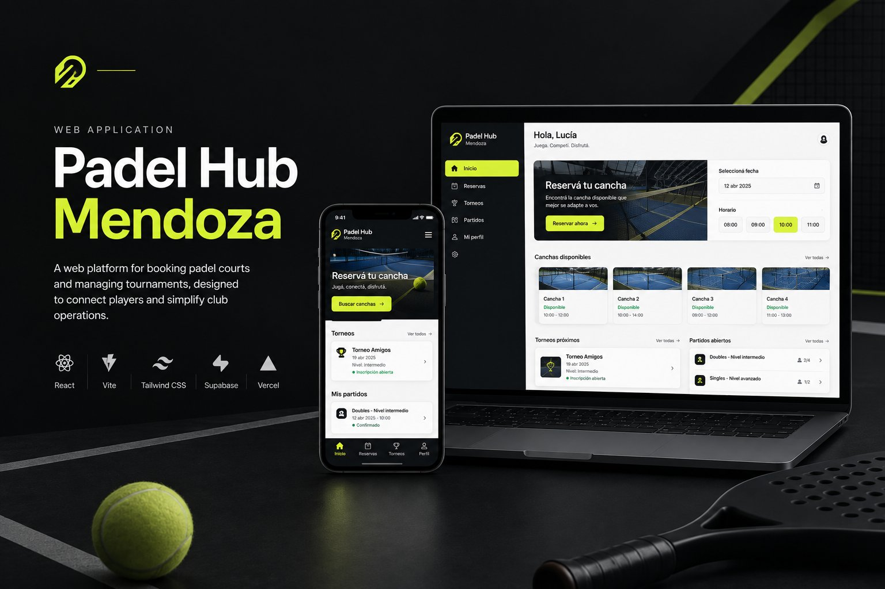
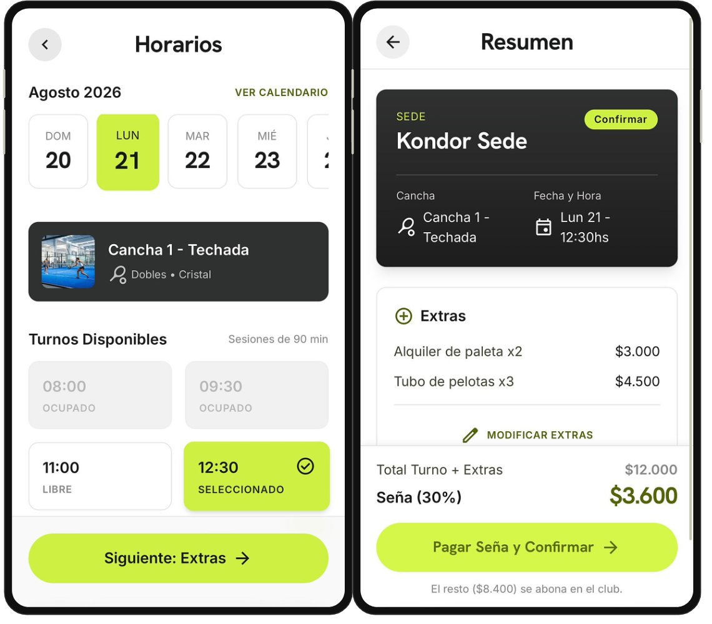
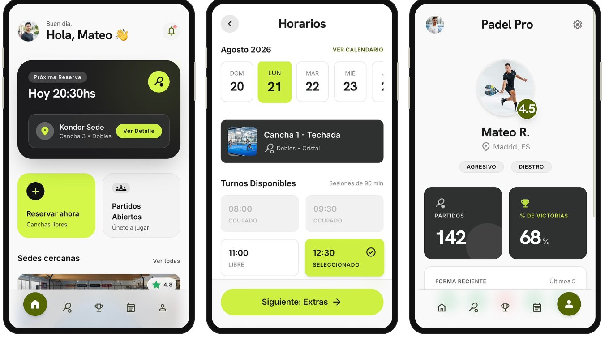
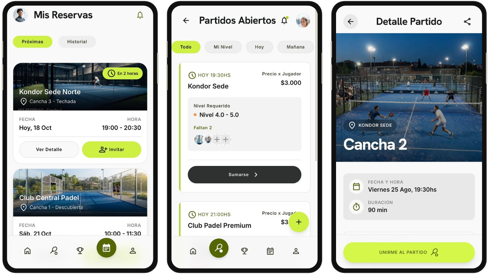
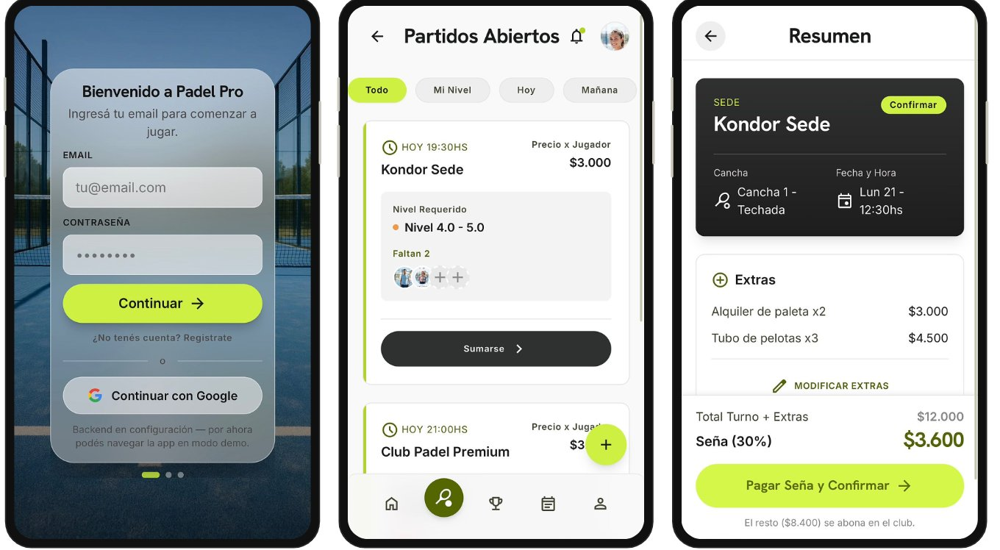
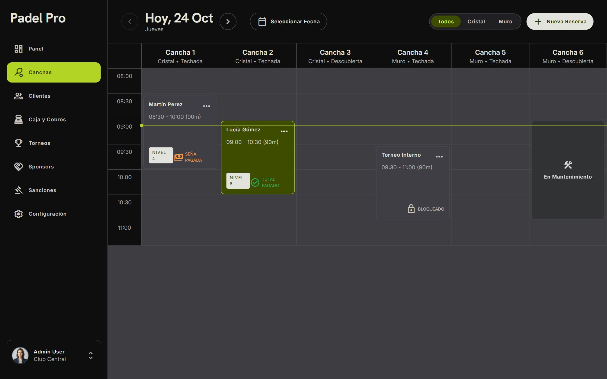
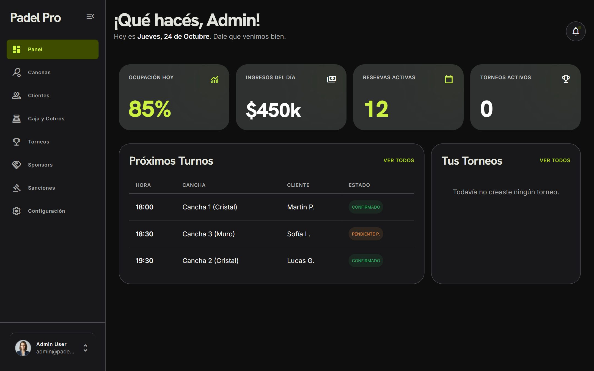

Del mensaje al club a la cancha reservada.From messaging the club to a booked court.
Una plataforma de pádel para Mendoza con dos experiencias: la app donde el jugador reserva, se suma a partidos y sigue su nivel, y el panel donde el club organiza torneos, cobra y administra.A padel platform for Mendoza with two experiences: the app where players book, join matches and track their level, and the dashboard where clubs run tournaments, take payments and manage operations.

La app del jugador y el panel del club están desarrollados con React y Supabase. La demo pública corre con datos de ejemplo y se entra sin cuenta. El cobro con Mercado Pago todavía está simulado.The player app and the club dashboard are built with React and Supabase. The public demo runs on sample data and needs no account. Mercado Pago checkout is still simulated.
El pádel en Mendoza se organiza por WhatsApp.Padel in Mendoza runs on WhatsApp.
Los sistemas de torneos que se usan hoy fallan justo en lo que pasa en una cancha real. El club con dos sedes carga todo dos veces, la cancha del fondo no tiene señal y cada demora se avisa uno por uno.The tournament systems used today fail at exactly what happens on a real court. A club with two venues enters everything twice, the back court has no signal, and every delay is announced one person at a time.
- Preguntar por mensaje si quedó inscriptoMessaging to ask if they're registered
- No encontrar con quién jugar si va soloNo one to play with when going solo
- Fotos del torneo en carpetas compartidas por chatTournament photos in folders shared over chat
- Fixture armado a mano en una planillaFixtures built by hand in a spreadsheet
- Datos duplicados entre sedesData duplicated across venues
- Avisos de horario uno por unoSchedule updates sent one by one
- Se usa en la cancha: mala señal, de nocheUsed courtside: poor signal, at night
- Clubes chicos y clubes con varias sedesSmall clubs and multi-venue clubs
- Pagos con Mercado Pago y transferenciaPayments via Mercado Pago and bank transfer
Dos experiencias en un producto.Two experiences in one product.
El jugador quiere jugar con el menor esfuerzo posible. El club quiere llenar canchas y organizar sin perseguir a nadie. Lo que hace uno alimenta al otro.Players want to play with as little effort as possible. Clubs want full courts and to organize without chasing anyone. What one does feeds the other.
"¿Cuándo juego y con quién?""When do I play, and with whom?"
- Reservar una cancha en pocos pasosBook a court in a few steps
- Sumarse a un partido de su nivelJoin a match at their level
- Ver su nivel, partidos y victoriasSee their level, matches and wins
"¿Cómo organizo sin el ida y vuelta?""How do I organize without the back-and-forth?"
- Armar zonas y llaves automáticamenteGenerate groups and brackets automatically
- Cobrar inscripciones y señasCollect entry fees and deposits
- Administrar varias sedes desde un lugarManage several venues from one place
El problema, en una pregunta.The problem, in one question.
¿Cómo podríamos…?How might we…?¿Cómo podríamos lograr que un jugador reserve o se sume a un partido sin escribirle a nadie, y que el club organice y cobre sin perseguir a nadie?How might we let a player book or join a match without messaging anyone, and let the club organize and get paid without chasing anyone?
Principios de diseñoDesign principles
Lo próximo, primeroWhat's next comes first
Del login a ver la próxima reserva, sin menús intermedios.From login straight to the next booking, no menus in between.
Nivel parejoEven matches
Cada partido abierto pide un rango de nivel, para que el juego valga la pena para todos.Every open match asks for a level range, so the game is worth it for everyone.
Pensado para la canchaBuilt for the court
Modo oscuro para jugar de noche y carga de resultados que funciona sin señal.Dark mode for night games and score entry that works without signal.
Reservar una cancha en cuatro pasos.Booking a court in four steps.
Cada paso pide una sola decisión. El último es el que más pesa para el club: la seña.Each step asks for a single decision. The last one matters most to the club: the deposit.

Por qué se ve así.Why it looks this way.
Reservas que no se presentanNo-show bookings
Pedir el pago completo frena la reserva; no pedir nada deja canchas vacías.Asking for full payment discourages booking; asking for nothing leaves courts empty.
Seña del 30% online30% deposit online
El club asegura el turno y el jugador no adelanta todo. El resto se abona en el club, y la pantalla lo dice con el monto exacto.The club secures the slot and the player doesn't pay everything upfront. The rest is paid at the club, and the screen says so with the exact amount.
Partidos desparejosUneven matches
Sumarse a un partido con gente de otro nivel arruina el juego para los cuatro.Joining a match with players at a different level ruins the game for all four.
Nivel requerido en cada tarjetaRequired level on every card
Cada partido abierto muestra el rango de nivel, el precio por jugador y cuántos faltan, con filtros por "Mi nivel", hoy y mañana.Every open match shows the level range, price per player and spots left, with filters for "My level", today and tomorrow.
Abrir la app para recordarOpening the app just to remember
La pregunta más frecuente del jugador es "¿cuándo juego?".The player's most common question is "when do I play?".
La próxima reserva como protagonistaThe next booking takes center stage
El inicio abre con la próxima reserva (sede, cancha y hora) y dos accesos grandes: reservar o sumarse a un partido.Home opens with the next booking (venue, court and time) and two large shortcuts: book or join a match.
Cada club ordena distintoEvery club ranks differently
En la práctica, cada club aplica sus propios criterios para armar categorías.In practice, every club applies its own criteria to set categories.
Doble rankingDual ranking
El club elige si usa el ranking oficial o el propio, y los ascensos y descensos se actualizan solos al cerrar cada torneo.The club picks the official ranking or its own, and promotions and relegations update automatically when each tournament ends.
La app del jugador.The player app.
Primero, la app del jugador en el celular. Después, el panel del club en la computadora.First, the player app on mobile. Then, the club dashboard on desktop.





Qué está construido y qué sigue.What's built and what's next.
Diseñé las pantallas y las llevé a código con React, Tailwind y Supabase (cuentas, base de datos y permisos por rol). Lo pendiente está separado y a la vista.I designed the screens and took them to code with React, Tailwind and Supabase (accounts, database and role permissions). What's pending is listed separately and in the open.
- Jugador: reservas con seña, partidos abiertos por nivel, chat del partido y perfilPlayer: bookings with deposit, open matches by level, match chat and profile
- Torneos: calendario, inscripción, fixture, galería y rankingTournaments: calendar, registration, fixtures, gallery and ranking
- Club: resumen del día, timeline de canchas, clientes y cajaClub: daily overview, court timeline, clients and cash register
- Club: gestión de torneos, participantes y aprobación de pagosClub: tournament management, participants and payment approval
- Sponsors, sanciones y reglamentoSponsors, penalties and rules
- Demoras: reprograma los turnos siguientes y avisa a los jugadoresDelays: reschedules the following slots and notifies players
- Modo claro y oscuroLight and dark mode
- Cobro real con Mercado Pago (hoy está simulado)Real Mercado Pago checkout (currently simulated)
- Carga de resultados sin conexiónOffline score entry
- Avisos por WhatsAppWhatsApp notifications
- Piloto con un club realPilot with a real club
Lo que me llevo.What I'm taking away.
- Dejar un modo demo con datos de ejemplo hace que cualquiera pueda probar el producto sin cuenta ni backend.A demo mode with sample data lets anyone try the product with no account or backend.
- Los problemas que hacen fracasar estas plataformas (señal, demoras, varias sedes) no aparecen en una pantalla: hay que pensar en la cancha.The issues that make these platforms fail (signal, delays, multiple venues) don't show up on a screen: you have to think about the court.
- Ser explícita sobre qué está hecho y qué no genera confianza con el cliente.Being explicit about what's done and what isn't builds trust with the client.
- Probar la plataforma en un torneo real con un club antes de abrirla.Test the platform in a real tournament with a club before launch.
- Testear el flujo de reserva con jugadores y medir cuánto tardan.Test the booking flow with players and measure how long it takes.
- Revisar el panel del club junto a los organizadores, con datos reales.Review the club dashboard with organizers, using real data.
MODO YA
La plataforma de delivery de Malargüe: app para clientes y locales, app para riders y landing de lanzamiento.Malargüe’s delivery platform: an app for customers and restaurants, an app for riders and a launch landing page.